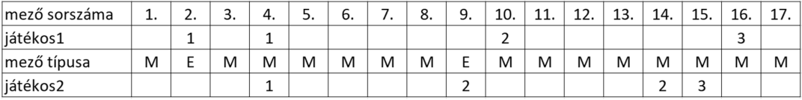
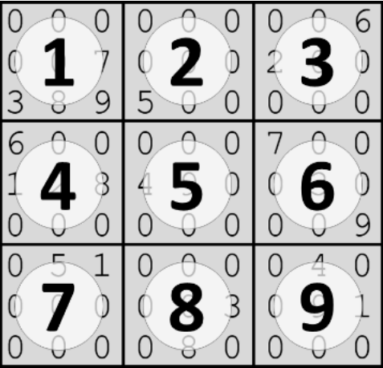

Projekt feladatok
Társas
Mi sem izgalmasabb a gyerekeknek, mint a nagyszülők szekrényeiben való kutakodás. Egy ilyen alkalommal az öt unoka egy régi dobozra bukkant. A doboz egy társasjáték kellékeit rejtette: a játék tábláját, egy dobókockát és hat különböző színű, lúd formájú bábut. A táblán több ösvényen lehet eljuttatni a ludat az itatóhoz. A játékosok a kezdés előtt kiválasztják a közös ösvényt, amelyen haladni fognak.
A ludak annyi mezőt ugorhatnak előre, amennyit a játékosok dobnak a kockával. Az ösvényen lehetnek különleges mezők, amelyekre érkezve:
- a lúd előreugorhat még egyszer annyit, mint amennyit dobott a játékos,
- vissza kell térnie arra a mezőre, amelyről indította az ugrást.
Az osvenyek.txt fájl soronként egy ösvény adatait tartalmazza. Az ösvények sorszámozása 1-től kezdődik. Az állomány legfeljebb 50 sorból, soronként legfeljebb 250 karakterből áll. Minden sorban egy-egy karaktersorozat van. A karakterek az M, E, V nagybetűk. Az M karakter egy mindenféle különleges tulajdonságtól mentes mezőt jelent. Ha valaki az E karakterű mezőre lép, előreugorhat még ugyanannyit, mint amennyivel ide jutott. Ha a V karakterű mezőre lép, a bábunak vissza kell térnie oda, ahonnan ide ugrott. Két egymást követő különleges karakter között mindig legalább 6 darab M karakter van.
A játék akkor ér véget, ha mindenki ugyanannyiszor dobott, és legalább egy játékos elérte az utolsó mezőt, vagy túllépett rajta. Azok a nyertesek, akik elérték az utolsó mezőt vagy túlléptek rajta. A dobasok.txt fájl egyetlen, szóközökkel tagolt sorból áll, amely a kockával egymást követően dobott értékeket tartalmazza. A fájlban 1 és 6 közötti számokból legfeljebb 2000 található. Tudjuk, hogy ennyi dobás biztosan elegendő a játék befejezéséhez. Azt nem rögzítettük, hogy melyik értéket melyik játékos dobta. Részlet a dobasok.txt állomány első sorából:
Ha két játékos játszik, akkor dobásaik értékei felváltva szerepelnek a dobasok.txt állományban. Tehát az első játékos először 2-t dob, majd a második játékos 4-et, utána az első játékos 6-ot, a második játékos 5-öt, és így tovább. Részlet az osvenyek.txt állomány első néhány sorából:
Ha a második ösvényen játszanak (az MEMM kezdetűn), akkor az első játékos 2-es dobásával a második mezőre lép. Ez E típusú mező, ezért azonnal, dobás nélkül még két mezővel előrelép, így jut az első dobásával először a kettes, majd a négyes mezőre. Ezt követően a második játékos a 4-es dobásával a negyedik mezőre lép. Ez M típusú, azaz mindenféle különleges tulajdonságtól mentes, így játékosunk a következő dobásig itt marad. Ismét az első játékos jön. Ő a 6-os dobásával a tizedik mezőre léphet tovább. Ez M típusú, ezért nem lép innen el, a második játékos jön. Ő az 5-ös dobásával a negyedik mezőről a kilencedik mezőre lép. Ez E típusú, tehát rögtön előreléphet a dobásának megfelelően újabb öt mezőt. A következő ábra ezeket a lépéseket szemlélteti:

Készítsen programot, amely az állományok adatait felhasználva megoldja az alábbi feladatokat! A program forráskódját mentse lud néven! A program megírásakor a felhasználó által megadott adatok helyességét, érvényességét nem kell ellenőriznie, és feltételezheti, hogy a beolvasandó adatok a leírtaknak megfelelnek.
A képernyőre írást igénylő részfeladatok esetén – a mintához tartalmában hasonlóan – írja ki a képernyőre a feladat sorszámát (például: 5. feladat), és utaljon a kiírt tartalomra is! Ha a felhasználótól kér be adatot, jelenítse meg a képernyőn, hogy milyen értéket vár! Mindkét esetben elfogadott az ékezetmentes kiírás is.
- Olvassa be és tárolja el az osvenyek.txt és a dobasok.txt állományok tartalmát!
- Jelenítse meg a képernyőn, hogy hány ösvény adatait tartalmazza az osvenyek.txt fájl, és mennyi dobás szerepel a dobasok.txt fájlban!
- Határozza meg, hogy melyik ösvény áll a legtöbb mezőből, és jelenítse meg az ösvény sorszámát és a mezők számát! Ha több ilyen is van, elegendő egyet megjelenítenie.
- Olvassa be és tárolja el egy ösvény sorszámát és a játékot játszók számát (legalább 2, legfeljebb 5)! A későbbiekben ezekkel az adatokkal dolgozzon!
- Készítsen statisztikát a megadott sorszámú ösvény mezőiből! Jelenítse meg, hogy ez milyen típusú mezőből mennyit tartalmaz! Ha egy adott típusú mező nem szerepel, akkor azt ne jelenítse meg! (Megoldása teszteléséhez használja az első három ösvényt is, ezek ugyanis nem tartalmaznak minden karaktert!)
- Írja a kulonleges.txt fájlba, hogy a választott ösvény mely mezői különlegesek! Soronként egy mezőt adjon meg a mező sorszámával és a mező típusát megadó karakterrel! A két értéket egy tabulátor karakterrel válassza el egymástól!
- Határozza meg, hogy melyik játékos jutna a legmesszebb, ha a választott ösvényen minden mező M típusú lenne! Jelenítse meg a legtávolabb jutó(k) sorszámát és azt, hogy a dobások hányadik körében alakult ki a végeredmény! Ha több ilyen játékos van, elegendő csak egyet megjelenítenie.
- Határozza meg, ki nyer, ha figyelembe veszi a mezők típusát is! Jelenítse meg a nyertes(ek) sorszámát és azt, hogy a többi bábu milyen sorszámú mezőn áll az utolsó teljes kör végén!
Példa a szöveges kommunikáció kialakításához:
2. feladat
A dobások száma: 1956
Az ösvények száma: 43
3. feladat
Az egyik leghosszabb a(z) 11. ösvény, hossza: 206
4. feladat
Adja meg egy ösvény sorszámát! 9
Adja meg a játékosok számát! 5
5. feladat
M: 185 darab
V: 8 darab
E: 8 darab
7. feladat
A játék a(z) 54. körben fejeződött be. A legtávolabb jutó(k) sorszáma: 5
8. feladat
Nyertes(ek): 4 5
A többiek pozíciója:
1. játékos, 153. mező
2. játékos, 185. mező
3. játékos, 183. mező
RGB színek
Fényképek számítógépes tárolására sokféle képformátumot ismerünk. A legegyszerűbb típusok az eredeti kép pixeleihez tartozó színértékeket tárolják, például ilyen a BMP vagy a fényképezőgépek által használt RAW formátum. Az ilyen képállomány bináris, melynek első néhány bájtja a kép jellemzőit írja le, míg a további bájtok sorfolytonosan a kép egy-egy pixelének színét adják meg.
Ebben a feladatban egy RAW formátumú fájlból átalakított szöveges állományt kell feldolgoznia. A kep.txt szöveges állomány egy 640×360 méretű, RGB kódolású képet ír le. Az állomány csak a képpontok színét tartalmazza sorfolytonosan, azaz a fájl 360 sorának mindegyike 640 képpontból, képpontonként három színértékből áll. Az első szám a piros (Red), a második szám a zöld (Green) és a harmadik szám a kék (Blue) értéket tartalmazza. Az RGB értékek 0 és 255 közötti egészek, melyeket a fájlban egy-egy szóköz választ el.
Részlet az állomány első néhány sorából:
0 85 112 0 86 113 0 86 113 0 86 113 0 86 113 0 86 113 …
0 86 111 0 86 111 0 86 113 0 86 113 0 86 113 0 86 113 …
0 86 113 0 86 113 0 86 113 0 86 113 0 86 113 1 87 114 …
0 86 113 0 86 113 0 86 113 0 86 113 1 87 114 1 87 114 …
…
Az első sor első három száma a kép bal felső képpontjának színe, azaz RGB(0, 85, 112), míg a második sor harmadik pixelének színe RGB(0, 86, 113), a negyedik sor hatodik oszlopában lévő képpont színe RGB(1, 87, 114).
A szöveges állomány által leírt kép:
Készítsen programot, amely az állomány adatait felhasználva megoldja az alábbi feladatokat! A program forráskódját mentse rgb néven! A program megírásakor a felhasználó által megadott adatok helyességét, érvényességét nem kell ellenőriznie, és feltételezheti, hogy a beolvasandó adatok a leírtaknak megfelelnek.
A képernyőre írást igénylő részfeladatok esetén – a mintához tartalmában hasonlóan – írja ki a képernyőre a feladat sorszámát (például: 2. feladat:), és utaljon a kiírt tartalomra is! Ha a felhasználótól kér be adatot, jelenítse meg a képernyőn, hogy milyen értéket vár! Mindkét esetben az ékezetmentes kiírás is elfogadott.
- Olvassa be a kep.txt állomány tartalmát, és tárolja el a 640×360 képpont színét!
- Kérje be a felhasználótól a kép egy pontjának sor- és oszlopszámát (a számozás mindkét esetben 1-től indul), és írja a képernyőre az adott képpont RGB színösszetevőit a minta szerint!
- Világosnak tekintjük az olyan képpontot, amely RGB-értékeinek összege 600-nál nagyobb. Számolja meg és írja ki, hogy a teljes képen hány világos képpont van!
- A kép legsötétebb pontjainak azokat a pontokat tekintjük, amelyek RGB-értékeinek összege a legkisebb. Adja meg, hogy mennyi a legkisebb összeg, illetve keresse meg az ilyen RGB összegű pixeleket, és írja ki mindegyik színét RGB(r,g,b) formában a mintának megfelelően!
- A képen a kék ég látható közepén egy felhővel. Az ég és a felhő színe között jelentős különbség van, így az ég-felhő határvonal programmal is felismerhető. Ennek megtalálásához készítsen függvényt hatar néven, amely megadja, hogy egy adott sorban van-e olyan hely a képen, ahol az egymás melletti képpontok kék színösszetevőinek eltérése meghalad egy adott értéket! A függvény kapja meg paraméterként a sor számát, illetve az eltérés értékét, melyek egészek! A függvény visszatérési értéke egy logikai érték legyen, amely megadja, hogy az adott sorban volt-e az eltérést meghaladó különbség az egymás melletti képpontok kék színében!
- Keresse meg a képen a felhő első és utolsó sorát az előzőleg elkészített függvény segítségével úgy, hogy eltérésként 10-et ad meg a függvénynek bemenetként! Adja meg az első és az utolsó olyan sor sorszámát, ahol az eltérés a soron belül valahol 10-nél nagyobb!
Példa a szöveges kimenetek kialakításához:
2. feladat:
Kérem egy képpont adatait!
Sor:180
Oszlop:320
A képpont színe RGB(184,183,181)
3. feladat:
A világos képpontok száma: 7837
4. feladat:
A legsötétebb pont RGB összege: 197
A legsötétebb pixelek színe:
RGB(0,85,112)
RGB(0,86,111)
RGB(0,86,111)
6. feladat:
A felhő legfelső sora: 103
A felhő legalsó sora: 280
Jeladó
Az állatok mozgását ma már rutinszerűen figyelik a rájuk rögzített jeladók segítségével. Ebben a feladatban egy ilyen jeladó által továbbított adatokat kell feldolgoznia.
Az itt használt jeladó úgy működik, hogy helyének x és y koordinátáját továbbítja. Jelet küld, ha a legutolsó küldés óta bármely koordináta változása elérte a 10 egységet. Ha nem történt ekkora elmozdulás, 5 perc elteltével akkor is mindenképpen jelenti helyét. A vevőegység egy fájlban rögzíti a jel érkezési idejét és a pozíciót. Előfordulhat, hogy a vétel meghiúsul, ezért lehetnek egymást követő adatsorok, amelyek között 5 percnél több idő telik el, vagy a koordináták változása 10 egységnél nagyobb.
Rendelkezésére áll a jel.txt nevű adatfájl, amely egy napról tartalmaz adatokat időrendben. Soraiban öt egész szám található, egymástól egy-egy szóközzel elválasztva. Az első három szám a jeladás időpontját (óra, perc, másodperc) adja meg, a negyedik szám az x, az ötödik az y koordináta. A sorok száma legfeljebb 1000, a koordináták -10 000 és 10 000 közötti értékek lehetnek.
Például:
…
3 21 19 126 639
3 26 19 131 641
3 27 55 124 651
3 31 50 134 649
…
4 19 11 126 42
4 29 11 128 36
4 32 21 130 7
…
A példa első csoportjában a második sor megmutatja, hogy a jeladó 5 egységnyit mozdult x, 2 egységnyit pedig y irányban 5 perc alatt. A harmadik bejegyzés azért született, mert y irányban 10 egységnyit mozdult el a jeladó, a negyedik bejegyzés pedig egy x irányú 10 egységnyi elmozdulást jelez.
A példa második csoportjában a második sor adataiból látszik, hogy legalább egyszer nem jutott el a jel a vevőhöz, mert 5 percnél több idő telt el az előző vételtől, de az eltelt idő a 10 percet nem haladja meg. A második és harmadik vétel által jelzett pozíciók y koordinátája 29 egységnyivel eltér, ezért legalább két vétel nem került rögzítésre.
Készítsen programot, amely az állomány adatait felhasználva az alábbi kérdésekre válaszol! A program forráskódját mentse jelado néven! A program megírásakor a felhasználó által megadott adatok helyességét, érvényességét nem kell ellenőriznie, és feltételezheti, hogy a rendelkezésre álló adatok a leírtaknak megfelelnek.
A képernyőre írást igénylő részfeladatok esetén – a mintához tartalmában hasonlóan – írja ki a képernyőre a feladat sorszámát (például: 5. feladat), és utaljon a kiírt tartalomra is! Ha a felhasználótól kér be adatot, jelenítse meg a képernyőn, hogy milyen értéket vár! Mindkét esetben az ékezetmentes kiírás is elfogadott.
- Olvassa be a jel.txt állomány tartalmát, tárolja el a rögzített jelek adatait, és azok felhasználásával oldja meg a következő feladatokat!
- Kérje be a felhasználótól egy jel sorszámát (a sorszámozás 1-től indul), és írja a képernyőre az adott jeladáshoz tartozó x és y koordinátát!
- Készítsen függvényt eltelt néven, amely megadja, hogy a paraméterként átadott két időpont között hány másodperc telik el! A két időpontot, mint paramétert tetszőleges módon átadhatja. Használhat három-három számértéket, két tömböt vagy listát, de más, a célnak megfelelő típusú változót is. Ezt a függvényt később használja fel legalább egy feladat megoldása során!
- Adja meg, mennyi idő telt el az első és az utolsó észlelés között! Az időt óra:perc:mperc alakban írja a képernyőre!
- Határozza meg azt a legkisebb, a koordináta-rendszer tengelyeivel párhuzamos oldalú téglalapot, amelyből nem lépett ki a jeladó! Adja meg a téglalap bal alsó és jobb felső sarkának koordinátáit!
- Írja a képernyőre, hogy mennyi volt a jeladó elmozdulásainak összege! Úgy tekintjük, hogy a jeladó két pozíciója közötti elmozdulása a pozíciókat összekötő egyenes mentén történt. Az összeget három tizedes pontossággal jelenítse meg! A kiírásnál a tizedesvessző és tizedespont kiírása is elfogadott. Az i-edik és az i+1-edik pontok távolságát a \(\sqrt{(x_{i}-x_{i+1})^{2}+(y_{i}-y_{i+1})^{2}}\) képlet segítségével határozhatja meg.
- Írja a kimaradt.txt fájlba a kimaradt észlelésekkel kapcsolatos adatokat! A kimeneti fájlban azok a bemeneti állományban rögzített vételi időpontok jelenjenek meg, amelyek előtt közvetlenül egy vagy több észlelés kimaradt! Az időpont mellett – a mintának megfelelően – jelenjen meg, hogy legalább hány jel maradt ki, és az is, hogy miből következtet a hiányra! Ha idő- és koordináta-eltérésből is adódik jelkimaradás, akkor a nagyobb értéket írja ki! Ha az időeltérés és a koordináták eltérése alapján is ugyanannyi jelkimaradásra következtetünk, akkor bármelyiket kiírhatja.
Példa a szöveges kimenetek kialakításához:
2. feladat
Adja meg a jel sorszámát! 3
x=126 y=639
4. feladat
Időtartam: 18:52:40
5. feladat
Bal alsó: 4 639, jobb felső: 147 727
6. feladat
Elmozdulás: 2007.677 egység
Minta a kimaradt.txt fájl tartalmára:
4 25 33 időeltérés 1
4 55 33 koordináta-eltérés 1
5 5 33 időeltérés 1
6 22 42 időeltérés 2
6 32 42 koordináta-eltérés 2
Építményadó
Egy Balaton-parti önkormányzat építményadót vezet be. Az adó mértéke a telken lévő építmény alapterületétől és a teleknek a Balatontól mért távolságától függ.
A telkeket a Balatonparttól mért távolságtól függően három sávba sorolták be. Az A sávba azok a telkek kerültek, amelyek 300 méternél közelebb vannak a tóhoz a B sáv az előzőn túl 600 méter távolságig terjed, a többi telek a C sávba tartozik. Az építmény után négyzetméterenként fizetendő összeg sávonként eltérő, azonban, ha az így kiszámított összeg nem éri el a 10.000 Ft-ot, akkor az adott építmény után nem kell adót fizetni.
A testületi döntést az Adó Ügyosztály egy mintával készítette elő, amely csupán néhány utca adatait tartalmazza. Ezek az adatok az utca.txt fájlban vannak. A fájl első sorában a három adósávhoz tartozó négyzetméterenként fizetendő összeg található A, B, C sorrendben, egy-egy szóközzel elválasztva:
A többi sorban egy-egy építmény adatai szerepelnek egy-egy szóközzel elválasztva. Az első a telek tulajdonosának ötjegyű adószáma; egy tulajdonosnak több telke is lehet. A második adat az utca neve, amely nem tartalmazhat szóközt. A harmadik adat a házszám, majd az adósáv megnevezése, végül az építmény alapterülete következik. A minta harmadik sorában például azt látjuk, hogy a 33366 adószámú tulajdonos telke az Aradi utca 8A-ban található, és a C sávba eső telken álló építmény alapterülete 180 m2.
A fájl legfeljebb 1000 telek adatait tartalmazza. A feladat megoldása során kihasználhatja, hogy a fájlban az adatok utca, azon belül pedig házszám szerinti sorrendben következnek.
Készítsen programot, amely az utca.txt állomány adatait felhasználva az alábbi kérdésekre válaszol! A program forráskódját mentse epitmenyado néven! (A program megírásakor a felhasználó által megadott adatok helyességét, érvényességét nem kell ellenőriznie, és feltételezheti, hogy a rendelkezésre álló adatok a leírtaknak megfelelnek.)
A képernyőre írást igénylő részfeladatok esetén – a mintához tartalmában hasonlóan – írja ki a képernyőre a feladat sorszámát (például: 3. feladat), és utaljon a kiírt tartalomra is! Ha a felhasználótól kér be adatot, jelenítse meg a képernyőn, hogy milyen értéket vár! Mindkét esetben az ékezetmentes kiírás is elfogadott.
- Olvassa be és tárolja el az utca.txt állományban talált adatokat, és annak felhasználásával oldja meg a következő feladatokat!
- Hány telek adatai találhatók az állományban? Az eredményt írassa ki a mintának megfelelően a képernyőre!
- Kérje be egy tulajdonos adószámát, és írassa ki a mintához hasonlóan, hogy melyik utcában, milyen házszám alatt van építménye! Ha a megadott azonosító nem szerepel az adatállományban, akkor írassa ki a „Nem szerepel az adatállományban.” hibaüzenetet!
- Készítsen függvényt ado néven, amely meghatározza egy adott építmény után fizetendő adót! A függvény paraméterlistájában szerepeljen az adósáv és az alapterület, visszaadott értéke pedig legyen a fizetendő adó! A következő feladatokban ezt a függvényt is felhasználhatja.
- Határozza meg, hogy hány építmény esik az egyes adósávokba, és mennyi az adó összege adósávonként! Az eredményt a mintának megfelelően írassa ki a képernyőre!
- Bár az utcák többé-kevésbé párhuzamosak a tó partjával, az egyes porták távolsága a parttól az utcában nem feltétlenül ugyanannyi. Emiatt néhány utcában – az ottani tulajdonosok felháborodására – egyes telkek eltérő sávba esnek. Listázza ki a képernyőre, hogy melyek azok az utcák, ahol a telkek sávokba sorolását emiatt felül kell vizsgálni! Feltételezheti, hogy minden utcában van legalább két telek.
- Határozza meg a fizetendő adót tulajdonosonként! A tulajdonos adószámát és a fizetendő összeget írassa ki a mintának megfelelően a fizetendo.txt állományba! A fájlban minden tulajdonos adatai új sorban szerepeljenek, a tulajdonos adószámát egy szóközzel elválasztva kövesse az általa fizetendő adó teljes összege.
Példa a szöveges kimenetek kialakításához:
2. feladat. A mintában 543 telek szerepel.
3. feladat. Egy tulajdonos adószáma: 68396
Harmat utca 22
Szepesi utca 17
5. feladat
A sávba 165 telek esik, az adó 20805600 Ft.
B sávba 144 telek esik, az adó 13107000 Ft.
C sávba 234 telek esik, az adó 3479600 Ft.
6. feladat. A több sávba sorolt utcák:
Besztercei
Gyurgyalag
Icce
Kurta
Rezeda
Szepesi
Példa a fizetendo.txt fájl kialakításához: (A fájl a megadott forrásállomány esetén 519 adatsort fog tartalmazni.)
Sudoku
A sudoku egy logikai játék, melyben megadott szabályok szerint számjegyeket kell elhelyezni egy táblázatban. Ebben a feladatban 9×9-es táblázatot használunk.
A táblázat – az alábbi ábrának megfelelően – 9 darab 3×3-as résztáblázatra van felosztva. Minden résztáblázatot az 1, 2, 3, 4, 5, 6, 7, 8, 9 számokkal kell kitölteni úgy, hogy az egész 9×9-es táblázat minden sorában és minden oszlopában az 1...9 számok mindegyike pontosan egyszer forduljon elő. A rejtvény készítője előre ki szokta tölteni a táblázat bizonyos celláit. A rejtvényfejtő feladata kitölteni a maradék cellákat a leírt szabályoknak megfelelően.
A bemenetet tartalmazó szövegfájlok első 9 sorának mindegyike 9 egész számot tartalmaz, a játék kiindulási állapotának megfelelően. A kitöltetlen mezők helyén a 0 szám olvasható. A következő néhány sorban a játékos egy-egy lehetséges kitöltési lépését rögzítették. Egy lépést három egész szám ír le: a számot, amelyet a játékos be akar írni, majd a sor és az oszlop számát, ahova írni szeretné. A bemeneti fájl egy-egy sorában a számokat egy-egy szóköz választja el egymástól. A táblázat ellentmondásmentes, tehát megoldható feladatot ír le. A játékos által megtett lépések száma legalább 1, legfeljebb 10, közöttük lehet hibás.
Például:
0 0 0 0 0 0 0 0 6
0 0 7 0 0 0 2 0 0
3 8 9 5 0 0 0 0 0
6 0 0 0 0 0 7 0 0
1 2 8 4 9 0 0 3 0
0 0 0 0 0 0 0 0 9
0 5 1 0 0 0 0 4 0
0 0 0 0 0 3 0 9 1
0 0 0 0 8 0 0 0 0
9 2 4
1 2 1
5 9 9
7 2 2

A fenti példában a nehez.txt bemeneti fájl tartalma látható. A 10. sorban szereplő számok azt jelentik, hogy a 9-es értéket kell a 2. sor 4. helyére beírni. Az adott sorban és az adott oszlopban nem szerepel még a 9-es, sőt, az érintett négyzetben sem, így a lépéssel nem alakul ki hiba, megtehető. A 11. sorbeli lépés is megtehető. A 13. sor hibás lépést tartalmaz, mert a 2. sorban már szerepel a 7-es szám.
A jobb oldalon látható képen a körbe írt számok megadják, hogy az egyes 3×3 méretű résztáblákat milyen számmal azonosítjuk.
Készítsen programot, amely a bemeneti állományok egyikét felhasználva (konnyu.txt, kozepes.txt, nehez.txt) az alábbi kérdésekre válaszol! A program forráskódját mentse sudoku néven! (A program megírásakor a felhasználó által megadott adatok helyességét, érvényességét nem kell ellenőriznie, feltételezheti, hogy a rendelkezésre álló adatok a leírtaknak megfelelnek.)
A képernyőre írást igénylő részfeladatok eredményének megjelenítése előtt írja a képernyőre a feladat sorszámát (például: 4. feladat)! Ha a felhasználótól kér be adatot, jelenítse meg a képernyőn, hogy milyen értéket vár! Az ékezetmentes kiírás is elfogadott.
- Olvassa be egy fájl nevét, egy sor és egy oszlop sorszámát (1 és 9 közötti számot)! A későbbi feladatokat ezen értékek felhasználásával kell megoldania!
- Az előző feladatban beolvasott névnek megfelelő fájl tartalmát olvassa be, és tárolja el a táblázat adatait! Ha ezt nem tudja megtenni, akkor használja forrásként a rendelkezésre álló állományok egyikét!
- Írja ki a képernyőre, hogy a beolvasott sor és oszlop értékének megfelelő hely…
- milyen értéket tartalmaz! Ha az adott helyen a 0 olvasható, akkor az „Az adott helyet még nem töltötték ki.” szöveget jelenítse meg!
- melyik résztáblázathoz tartozik!
- Határozza meg a táblázat hány százaléka nincs még kitöltve! Az eredményt egy tizedesjegy pontossággal jelenítse meg a képernyőn!
- Vizsgálja meg, hogy a fájlban szereplő lépések lehetségesek-e a beolvasott táblázaton!
Tekintse mindegyiket úgy, mintha az lenne az egyetlen lépés az eredeti táblázaton, de ne
hajtsa azt végre! Állapítsa meg, hogy okoz-e valamilyen ellentmondást a lépés végrehajtása!
Írja ki a lépéshez tartozó három értéket, majd a következő sorba írja az alábbi
megállapítások egyikét! Ha több megállapítás is igaz, elegendő csak egyet megjelenítenie.
- „A helyet már kitöltötték”
- „Az adott sorban már szerepel a szám”
- „Az adott oszlopban már szerepel a szám”
- „Az adott résztáblázatban már szerepel a szám”
- „A lépés megtehető”
Minta a szöveges kimenetek kialakításához:
1. feladat
Adja meg a bemeneti fájl nevét! konnyu.txt
Adja meg egy sor számát! 1
Adja meg egy oszlop számát! 1
3. feladat
Az adott helyen szereplő szám: 5
A hely a(z) 1 résztáblázathoz tartozik.
4. feladat
Az üres helyek aránya: 17.3%
5. feladat
A kiválasztott sor: 2 oszlop: 4 a szám: 9
A helyet már kitöltötték.
A kiválasztott sor: 3 oszlop: 6 a szám: 7
A lépés megtehető.
A kiválasztott sor: 6 oszlop: 6 a szám: 3
A résztáblázatban már szerepel a szám.
A kiválasztott sor: 7 oszlop: 9 a szám: 8
Az adott oszlopban már szerepel a szám.